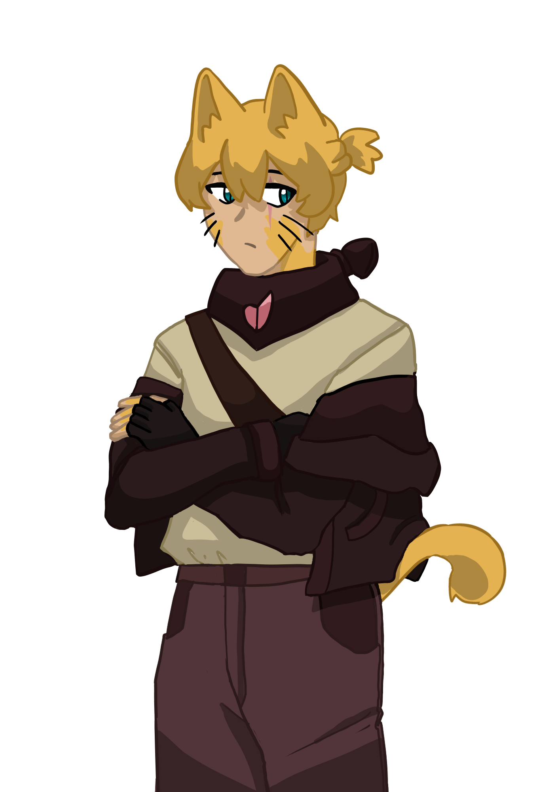
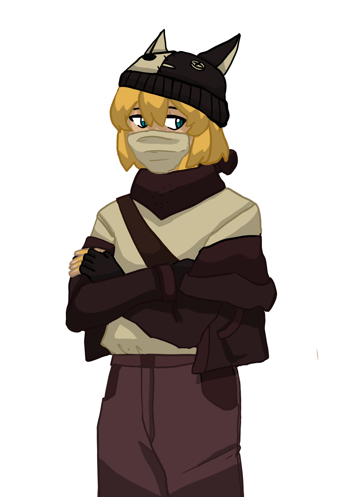
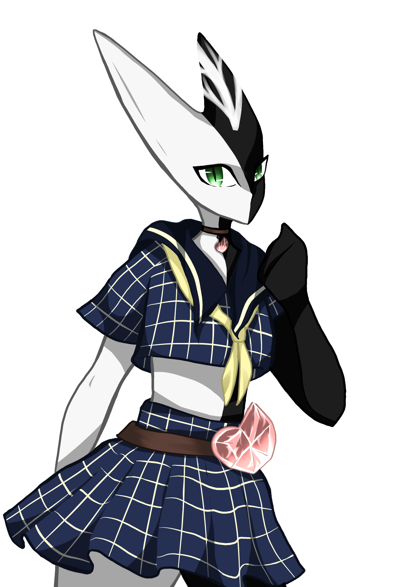
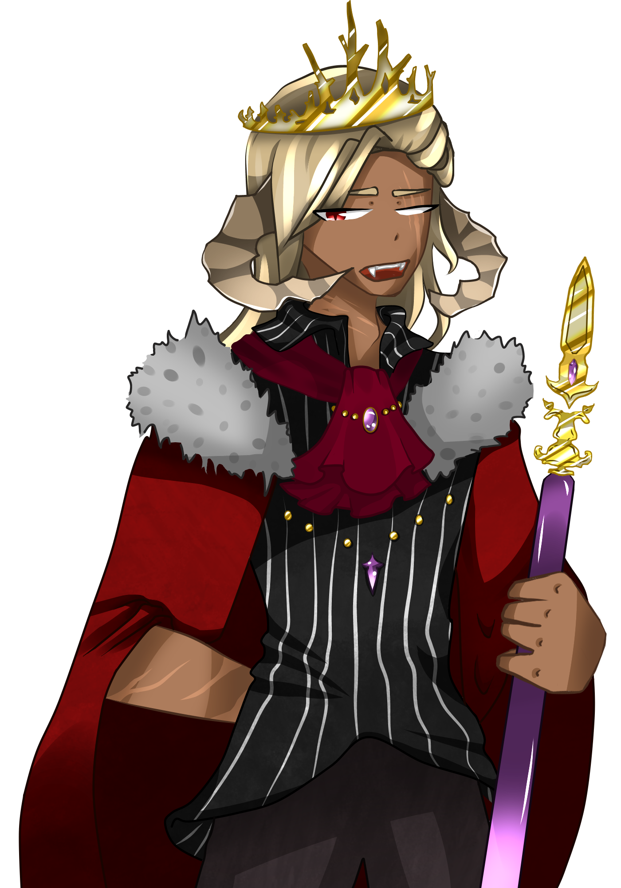
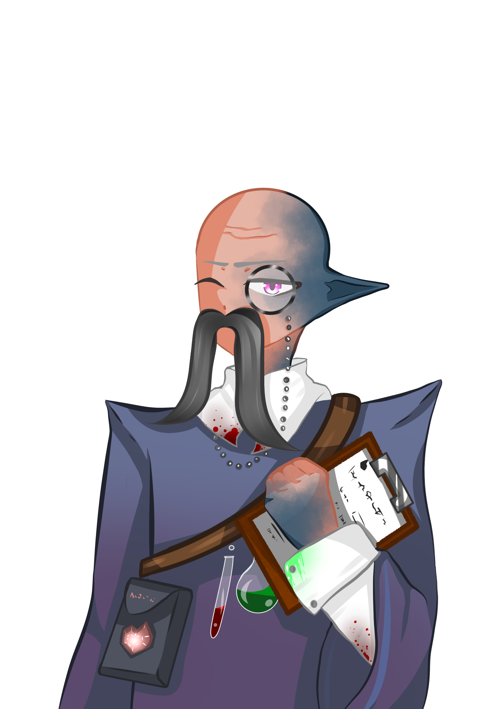
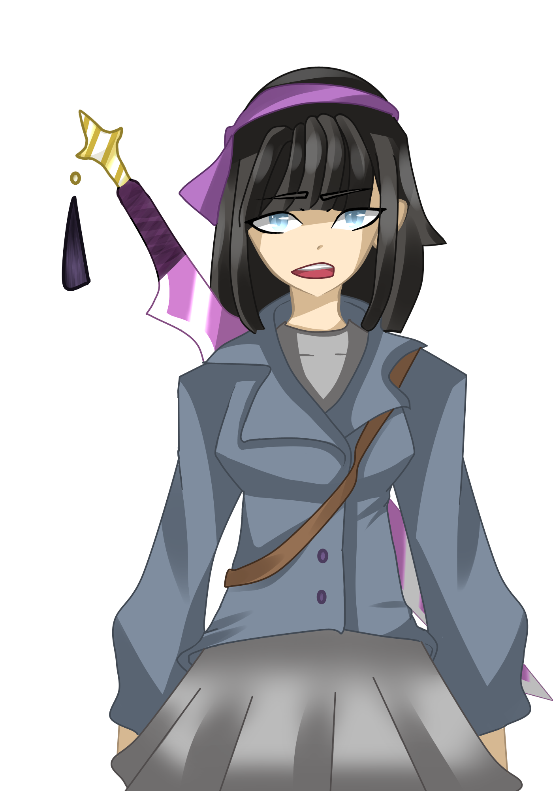

Characters
Main Character
The MC finds themself in a world unknown to them. |
|
|   |
Vita
Vita is cat-boy and a member of the organisation "Shelter". |
|  |
Steak
Steak is the leader and founder of the organisation
"Shelter". |
|  |
King Ajax
Ajax is tall , handsome, young man and king of the monster. |
|  |
Doctor
He is a funny little elf and the doctor of shelter. |
|  |
Human girlShe has a lot of knowledge of this world. The girl dislikes the war and the way most people of her village treat others. She knows how to fight and is skilled in martial arts. One thing she always carries with her is her sword. |